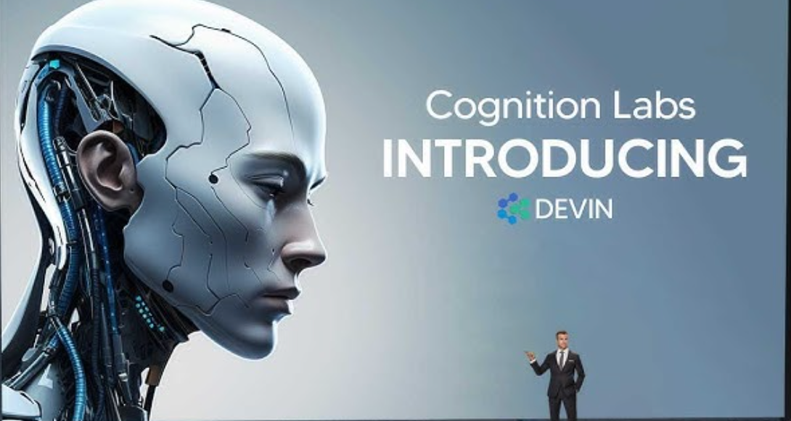

AI Highlights
Discover the week's top 3 AI breakthroughs!

The First AI Software Engineer

Welcome to AI Horizon.
Your Premier Source for AI and Technology
Explore the Evolution and Potential of AI
In this section, we introduce the fundamental concepts of artificial intelligence (AI), offering a concise overview of its definitions, principles, and applications. AI encompasses pivotal areas such as machine learning, deep learning, natural language processing, and robotic perception. Machine learning enables computers to learn from data and experiences, adapting to new information without explicit programming. Deep learning utilizes neural networks to process complex data, revolutionizing tasks like image recognition and language understanding. Natural language processing empowers machines to understand, interpret, and generate human language, facilitating tasks like translation and sentiment analysis. Robotic perception enables machines to perceive and interact with their environment through sensors and cameras. The objective here is to provide visitors with a basic understanding of AI concepts, igniting interest and prompting further exploration of the resources available on our AI Horizon website. Understanding these fundamentals is key to unlocking the potential of AI in various sectors and industries.
This section provides a brief overview of the history of artificial intelligence (AI), tracing its roots back to the 20th century. The concept emerged early on, but significant strides were made in the 1950s, with pioneers like Alan Turing laying the groundwork for AI development. Key milestones include the Dartmouth Conference in 1956, where the term "artificial intelligence" was coined, and the development of the first AI programming languages. Machine learning and deep learning subsequently emerged as pivotal disciplines, revolutionizing AI and enabling breakthroughs in various domains. The objective here is to offer visitors a concise glimpse into the historical context and evolution of AI, providing a foundation for understanding its significance and future prospects.
This section outlines the primary objectives of artificial intelligence (AI), which aim to develop computer systems capable of performing tasks akin to human intelligence. These objectives encompass learning, adaptation, reasoning, perception, and interaction with the environment. Additionally, AI goals extend to enhancing productivity, optimizing processes, solving complex problems, and improving overall quality of life. These objectives have broad applicability, ranging from autonomous driving and personalized recommendations on social networks to medical diagnostics and robotic automation in industry. The objective here is to provide visitors with a succinct understanding of the purpose and goals of artificial intelligence, emphasizing its transformative potential across various sectors and daily activities.
Discover the week's top 3 AI breakthroughs!
Discover insights from the foremost leaders in the industry


Join the Conversation
Share Your AI Thoughts and Experiences
Nejra Idrizović
Exploring AI has been an eye-opening journey for me. From its applications in everyday life to its potential to shape the future, delving into the world of artificial intelligence has been both fascinating and thought-provoking. As I continue to learn and engage with AI technology, I'm excited to share my experiences and insights with others on this platform.
Liam Johnson
My experience with AI has been nothing short of exhilarating. As someone who's always been fascinated by technology, diving into the realm of artificial intelligence has opened up a whole new world of possibilities. From exploring machine learning algorithms to experimenting with neural networks, every step of this journey has been a learning adventure. I'm grateful for platforms like AI Horizon that allow me to share my discoveries and connect with others who share my passion for innovation.
Emily Chen
AI Horizon has been an invaluable resource for me as I navigate the complex world of artificial intelligence. As a student eager to learn more about this rapidly evolving field, I've found the articles and insights on this platform to be incredibly informative and inspiring. From exploring the latest advancements in AI research to gaining practical tips for developing AI applications, AI Horizon has become my go-to destination for all things AI-related. I'm grateful for the opportunity to engage with this vibrant community and expand my knowledge in this exciting field.